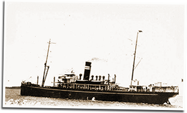

|
j
a v a s c r i p t |
October 23, 1943
Tribune: "Price Probe Ordered" — probing won't bring prices down. "Foe loses 74 vessels, 169 planes, 12,000 killed ... in New Guinea." But the Japanese evacuated, er ... transferred from Salamaua and Lae to the Finschhafen area. The Spanish Foreign Minister addresses a congratulatory telegram to "Your Excellency" Laurel — a diplomatic nicety in lieu of the recognition he asked for.

SS Bohol
Some six months ago, an American submarine sank the Bohol between Palawan and Panay. Here's the story from Lopez, a friend of mine who was aboard. The sub surfaced at 2130 and signaled the Bohol to stop. The sole Japanese on board elected to continue as land was near. The submarine fired a few shells, and the Bohol's crew, including the Japanese, had to board the lifeboat. One burst of machinegun fire killed one, and a bullet nicked Lopez in the arm. The captain shouted: "Hey Joe, we're all Filipinos here." The sub left after finishing off the Bohol. The lifeboat drifted for 24 hours in very heavy seas before landing in Panay where they were captured by guerrillas. The sole Japanese was taken away and never seen again. The rest, including one Italian and two Spaniards, were held under suspicion of being enemy aliens or collaborators for 5-1/2 months — until some Japanese troops entered the area. The guerrillas left them behind as they fled to the mountains. After questioning by the Japanese, they were released. Lopez has been here for three weeks now, but the ordeal has aged him and left him in poor health. He said the food was not nutritious and the guerrillas were not well organized. |
|
|
|
|